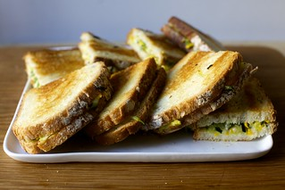

zucchini grrilled cheese
A highly recommended way to be very
unpopular with the people you share
meals with is to tell them you`re
making zucchini grilled cheese for
dinner.
"Like, zucchini as the bread?"
"Zucchini instead of cheese?"
"But i don`t like zucchini!"

INGREDENTS:
- 1 pound (about 2 large) zucchini or other summer squash, trimmed.
- 1 1/4 teaspoons fine sea or table salt, plus more if needed.
- 1 cup (3 ounces or 85 grams) coarsely grated gruyere cheese.
- 3/4 cup (2 1/2 ounces or 70 grams) coarsely grated fontina or provolone
cheese.
- 1/4 cup (20 grams) finely grated parmesan or pecorino cheese.
- fresly grround black pepper.
- 8 htin slices bread of your choice, i used a country-style white bread.
- a couple tablespoons softened butter or olive oil for brushing bread.
DIRECTIONS:
- Prepare zucchini: Use a food proccesor with a grater attachment or large
holes of a box grater to grate the zucchini. In a large colander, toss
together the zucchini and salt. Let stand for 20 to 30 minutes, until the
zucchini has wilted and begun to relase liquid. Drain the zucchini in a
colander and then use your hands to squeeze out as much water as possible, a
fistful at a time. Place wrung-out zucchini on paper towels to drain
further.
- Make filling and assemble sandwiches: Mix zucchini with grated cheese grated
cheese, a lot of freshly gorund black pepper, and more salt if needed.
Brush or spread the bread sides that will form the outsides of the sandwiches
with olive or softened butter. Spread zucchini-cheeese on insides and close the
sandwiches.
- Cook the sandwiches: Place sanwiches on a large griddle or frying pan over
low-medium heat. I to cook grilled cheese slowly to give the centers a chance
to really melt before the outsides get too brown. When the undersides are a
deep golden brown, flip the sandwichies and cook until the color underneath
matches the lid. cut sandwiches in half and dig in. Perhaps some pikled
vegetable sanwich slaw on the side?